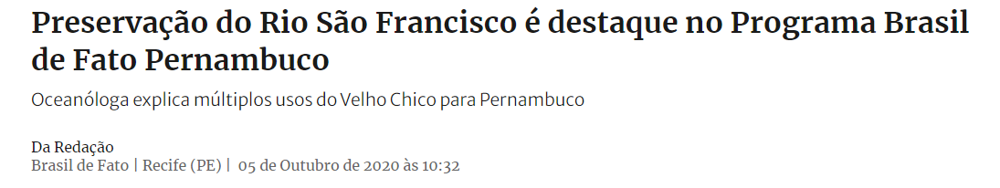

Fechar
Essa música foi composta em 1955, pelo Rei do Bailão, Luiz Gonzaga.
Riacho do Navio
Corre pro Pajeú
O rio Pajeú vai despejar
No São Francisco
O rio São Francisco
Vai bater no mei do mar
O rio São Francisco
Vai bater no mei do mar
Riacho do Navio
Corre pro Pajeú
O rio Pajeú vai despejar
No São Francisco
O rio São Francisco
Vai bater no mei do mar
O rio São Francisco
Vai bater no mei do mar
Ah! Se eu fosse um peixe
Ao contrário do rio
Nadava contra as águas
E nesse desafio
Saía lá do mar pro
Riacho do Navio
Eu ia direitinho pro
Riacho do Navio
Pra ver o meu brejinho
Fazer umas caçada
Ver as pegá de boi
Andar nas vaquejada
Dormir ao som do chocalho
E acordar com a passarada
Sem rádio e sem notícia
Das terra civilizada
Sem rádio e sem notícia
Das Terra civilizada
Riacho do navio
Riacho do navio
Riacho do navio
Tando lá não sinto frio
Ao longo da letra da música Luiz Gonzaga demonstra Saudades de onde ele veio pois ao longo da música temos expressões de seu estado. Ao longo da música percebemos que ele parece ter se mudado e que não consegue se adaptar assim se sentindo muito mal com tantas notícias ruins. E de tanta saudade ele faria de tudo para voltar dando o exemplo de peixe contra a correnteza.
Fechar
O rio Pajeú é um curso de água que banha o estado de Pernambuco, no Brasil. É o rio com a maior bacia hidrográfica do estado.
Fechar
Rio São Francisco
conhecido por Velho Chico, é um dos mais importantes cursos de água do Brasil e da América do Sul
Fechar
Fechar
Fechar
Alguns peixes nadam contra a correnteza
Fechar
A vaquejada ou pega boi é uma atividade cultural do Nordeste brasileiro, citada por alguns como um esporte, na qual dois vaqueiros montados a cavalo têm de derrubar um boi, puxando-o pelo rabo, entre duas faixas de cal do parque de vaquejada.